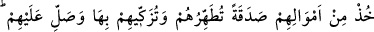
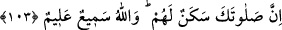

Hâfız der ki:
İsyanın yıldırım gibi Âdem’e isâbet ettiği yerde
Günahsız olduğumuz dâvâsını gütmek bize nasıl yakışır?
103. Onların mallarından kendilerini temizleyeceğin, yücelteceğin bir sadaka al
ve onlara duâ et; çünkü senin duân, onlara huzur verir. Allah işitendir, bilendir.
Ey Muhammed! “Onların” yâni savaştan geri kalan ve günahlarını itiraf eden o
kimselerin “mallarından kendilerini temizleyeceğin, yücelteceğin bir sadaka al!” Bu
sayede onları, bulaştıkları savaşa katılmama kirlerinden temizler ve tezkiye edersin.
Yani bu sadakayla ve onu almak suretiyle onların sevaplarını artırırsın, onları
muhlislerin mertebelerine yükseltirsin.
Rivayet edildiğine göre Hz. Peygamber (a.s.) onları bağlarından çözüp Allah da
onların tevbesini kabul edince, evlerine gidip mallarının tamamını getirdiler ve: “Yâ
Rasûlallah! İşte bunlar, bizi seninle savaşa katılmaktan alıkoyan mallarımız. Bunları al
ve bizim adımıza tasadduk eyle!” dediler. Hz. Peygamber (a.s.) bunu hoş karşılamadı.
Bunun üzerine bu âyet indi. Rasûlullah (s.a.) de tevbelerinin tam olması ve savaştan
geri kalmalarının keffâreti sayılması için mallarının üçte birini aldı.[256] Peygamber
Efendimiz’in onlardan aldığı bu sadaka, farz olan sadaka (zekat) değildir. Çünkü zekat
bu şekilde alınmaz.
Bir başka görüşe göre ise âyet, zenginlerden zekat almanın farziyetini bildirmek üzere
inmiş, mânâ yönünden önceki âyetlerden ayrı bir âyettir. Daha önce zenginlerden
bahsedilmemiş olsa da böyle bir yorum mümkündür. Nitekim “Biz onu kadir gecesinde
indirdik.” (el-Kadr, 97/1) âyetindeki zamirle, daha önce zikri geçmediği halde Kur’an
kastedilmektedir. Çünkü cümlenin gelişi onu göstermektedir. Bu takdire göre âyetin
mânâsı: “Müslüman zenginlerin mallarından sadaka, yani zekat al.” şeklinde olur. -
Verilen zekat, kulun Allah’a kulluktaki sadakatini gösterdiği için ona sadaka ismi
verilmiştir-. Fakihlerin çoğu bu görüşü benimsemiştir:
el-İhtiyâr adlı eserde denir ki: Zekatı vermekten kaçınan kimsenin zekatını devlet
reisi zorla alır ve verilmesi gereken yere verir. Çünkü Allah Teâlâ “Onların
mallarından sadaka (zekat) al!” buyurmuştur.
el-Eşbâh adlı eserde ise mezhebde mutemed olan görüşün zekâtın zorla alınmaması
yönünde olduğu belirtilmiştir.
el-Muhît adlı eserde bu hususta şunlar söylenmiştir: Mal sahibi zekatı vermekten
imtina ederse, zekat toplayan görevli ondan zorla almaz. Şayet zorla alırsa bu, zekat